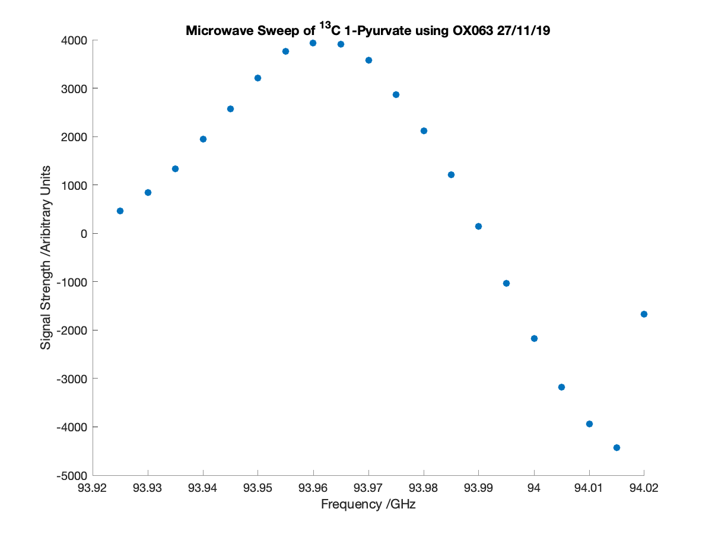

Plotting Data Collected from the Alpha System and/or 300MHz Magnet
Contents
Inputs
x: is a column vector containing the x-values of the plotted data
y: is a column vector containing the y-values of the plotted data
peaknames: is a cell containing the names of each plotted peak in each element
mbool: is 'Y' if the data is from a microwave sweep, or 'N' otherwise
xlab: is an alternative x-axis label (character vector) than the default
ylab: is an alternative y-axis label (character vector) than the default
titl: is an alternative title (character vector) than the default
Alternative Inputs
dat: is a cell that contains the data file(s). If the data is from a microwave sweep processed using AMARES from JMRUI, the first set of data should correspond to positive amplitudes, while the second set should correspond to negative amplitudes. If the amplitudes were calculated from MestReNova, dat should be a character vector (file name)
inp: should be set to either 'A' or 'M' depending on if the amplitudes of the data were calculated using the AMARES algorithm in JMRUI ('A') or peak integration in MestReNova ('M')
coilnum: is the number of coils used to measure the data. This variable should always be set to '[]' unless inp has been set to 'M'.
field: is a cell containing the names of the peaks quanitified from the data. It should always be set to '[]' unless inp has been set to 'M', since the AMARES algorithm names the peaks.
mic: If the data is from a microwave sweep, mic can either be a .csv file containing the frequencies used in GHz or a column vector
proc: is the procpar file associated with the data. If mbool is set to 'Y', proc is not necessary and can be set to '[]'.
Output
The function outputs a scatter plot of the raw data generated from the Alpha System and/or 300MHz Magnet
Child Functions
alphaparse: parses the alternative inputs into the x and y arrays, which are plotted
checkYN: checks if an input is 'Y', 'y', 'N', 'n' or something else
ischarvec: checks if an input is a character vector
function alphascatter(x,y,peaknames,mbool,dat,inp,coilnum,field,mic,proc,xlab,ylab,titl)
Verifying the Existence and Validity of x and y
scatterbool = 0;
if nargin >= 2
if isempty(x) == 0
if isempty(y) == 0
if string(class(x)) == "double"
if string(class(y)) == "double"
if length(x) == length(y)
scatterbool = 1;
end
end
end
end
end
end
Generating x and y if Inputs have not been Entered or are Invalid
if scatterbool == 0 if nargin >= 10 [x,y,peaknames] = alphaparse(mic,inp,mbool,dat,coilnum,field,proc); elseif nargin >= 9 [x,y,peaknames] = alphaparse(mic,inp,mbool,dat,coilnum,field); elseif nargin >= 8 [x,y,peaknames] = alphaparse([],inp,mbool,dat,coilnum,field); elseif nargin >= 7 [x,y,peaknames] = alphaparse([],inp,mbool,dat,coilnum); elseif nargin >= 6 [x,y,peaknames] = alphaparse([],inp,mbool,dat); elseif nargin >= 5 [x,y,peaknames] = alphaparse([],[],mbool,dat); elseif nargin >= 4 [x,y,peaknames] = alphaparse([],[],mbool); else [x,y,peaknames] = alphaparse; end end
Selecting the Defaults for the X-Axis Label, Y-Axis Label and Title
if nargin < 4 bool = input('Is the data from a microwave sweep? (Y/N): ','s'); mboolean = checkYN(bool); elseif isempty(mbool) == 1 bool = input('Is the data from a microwave sweep? (Y/N): ','s'); mboolean = checkYN(bool); elseif checkYN(mbool) == 0 bool = input('Is the data from a microwave sweep? (Y/N): ','s'); mboolean = checkYN(bool); else mboolean = checkYN(mbool); end
Generating a Scatter Plot of the Data
figure('Position',[0 0 600 450]) scatter(x,y(:,1),'filled') xlabbool = 0; ylabbool = 0; titlbool = 0; if nargin >= 11 if ischarvec(xlab) == 1 xlabbool = 1; end end if nargin >= 12 if ischarvec(ylab) == 1 ylabbool = 1; end end if nargin >= 13 if ischarvec(titl) == 1 titlbool = 1; end end if xlabbool == 0 if mboolean == 1 xlab = 'Frequency /GHz'; else xlab = 'Time /s'; end end if ylabbool == 0 ylab = 'Signal Strength /Aribitrary Units'; end if titlbool == 0 if mboolean == 1 titl = 'Signal Strength vs. Microwave Frequency'; else titl = 'Signal Strength vs. Time'; end end xlabel(xlab) ylabel(ylab) hold on numpeak = length(y(1,:)); if numpeak >= 2 for el = 2:numpeak scatter(x,y(:,el),'filled') end end if nargin < 4 peaknames = []; end if length(peaknames) > 1 legend(peaknames) end title(titl)
end
Notes
The inputs used in the example are:
x: []
y: []
_peaknames: []
dat: {'Microwave_Sweep_27_11_19_pos.txt', 'Microwave_Sweep_27_11_19_neg.txt'}
inp: 'A'
coilnum: []
field: []
mbool: 'Y'
mic: 'micval27_11_19.csv'
proc: []
xlab: []
ylab: []
titl: 'Microwave Sweep of ^{13}C 1-Pyurvate using OX063 27/11/19'
The example was run by putting:
alphascatter([],[],[],'Y',{'Microwave_Sweep_27_11_19_pos.txt',
'Microwave_Sweep_27_11_19_neg.txt'},'A',[],[],'micval27_11_19.csv',[],[],
[],'Microwave Sweep of ^{13}C 1-Pyurvate using OX063 27/11/19')into the command window.